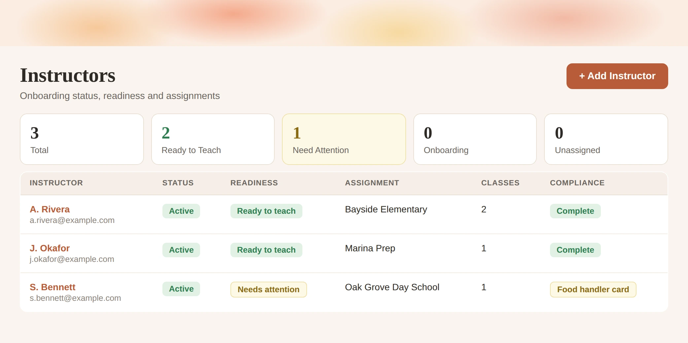

Case study
After-school cooking classes, run out of an inbox
Food Explorers teaches cooking and baking in schools across the Bay Area. Instructor onboarding, every school’s background-check rules and all the invoicing ran through one founder’s inbox.
- Industry
- After-school enrichment
- Where
- Bay Area schools
- Team
- Founder, plus contract instructors
- Ran on
- Google Drive, email, text messages
The problem
The classes were never the hard part. Everything around them was, and all of it ran again from scratch every season:
- Hiring instructors, then walking each one through onboarding by hand
- Getting them up to speed on how each school wants things done
- Sending recipes and instructions before every class
- Working out schedules with schools and with parents
- Writing and sending every invoice, one at a time
- Remembering which background checks each school required, and who had finished them
The documents lived in Google Drive, which worked. The asking, the chasing and the remembering lived in email, text messages and the founder’s memory.
A late invoice is an annoyance. An instructor turned away at a school door on the first day of class is a different kind of problem — and every school sets its own rules about who is allowed on site.
Tracked by hand, per instructor, per school, in an inbox. That is where the real risk sat.
What we changed
We followed a normal week before building anything. Three things were worth fixing; we left the rest alone.
-
01
Onboarding that asks once
One clear list of everything a new instructor needs to send, given up front instead of discovered over four rounds of email.
-
02
A compliance checklist for each school
Every school’s requirements written down once and tracked per instructor, so “is she cleared to be on site?” is a screen, not a memory.
-
03
One view of the season
Every school, the classes at each, who is locked in, and which classes still have nobody.
What it looks like now
Rebuilt from the real screens with example data. The layout and the information are hers; the names and numbers are not.


The result
She opens one page and knows where the season stands: which classes need an instructor, whose paperwork is outstanding, and which school is closest to being a problem. The work that used to live in her attention now lives somewhere she can look at it.
Google Drive stayed. Instructors learned no new tool. The accounts are in her name.
One real number goes here before this page is published — hours a week returned, or rounds of email removed. Ask her; don’t estimate it.
Sound like your business?
Food Explorers teaches cooking. The same shape turns up in martial-arts schools, music schools, home-service companies — anywhere you send trained people to other people’s sites and carry the paperwork yourself.
No technology pitch. We reply within one business day.